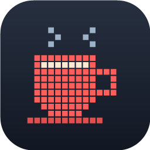

Drive your USB mini-LCD panel with whatever you want — graphs, video, YouTube, a clock, your desktop.
Pick a source, point it at the panel, hit Start. Queue several sources to rotate on timers with a live countdown. Minimizes to the tray and gets out of your way.
Free & donationware. No license key, no nag screens. Needs Windows 10/11 and the panel; close the stock vendor app first — it holds the panel open.
PixelBrew is an independent, clean reimplementation made for interoperability with hardware you already own. It is not affiliated with, endorsed by, or connected to Thermalright or any panel manufacturer. No vendor code, firmware, or assets are included. See the project's TERMS.md.